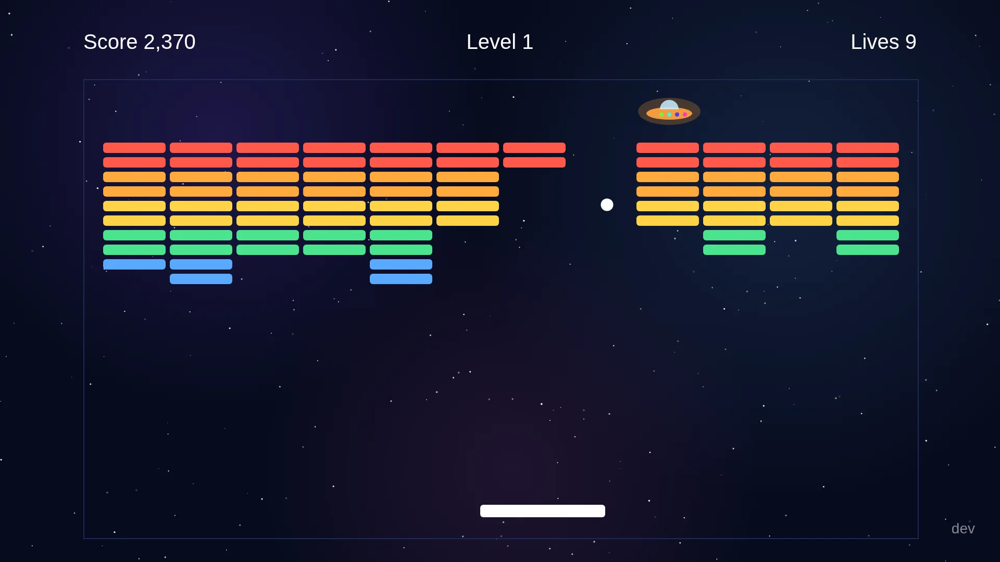
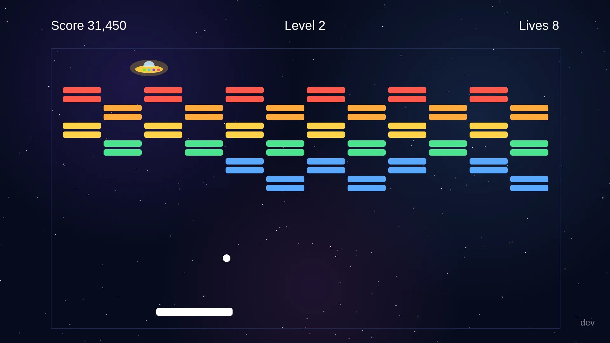
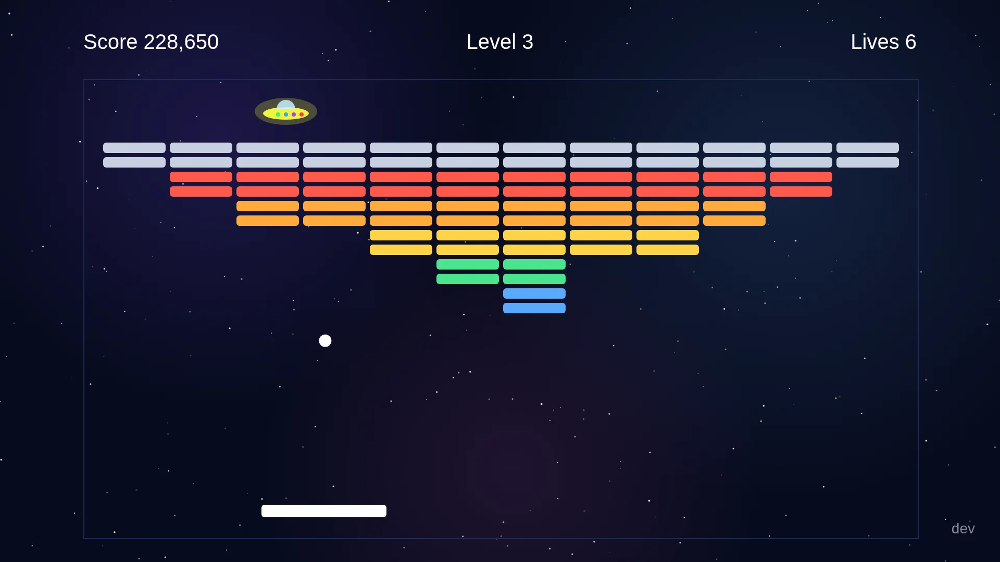
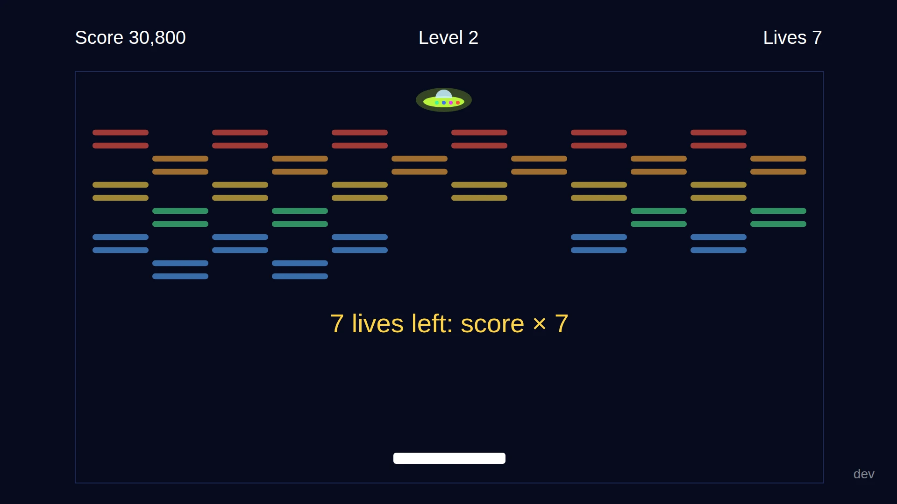
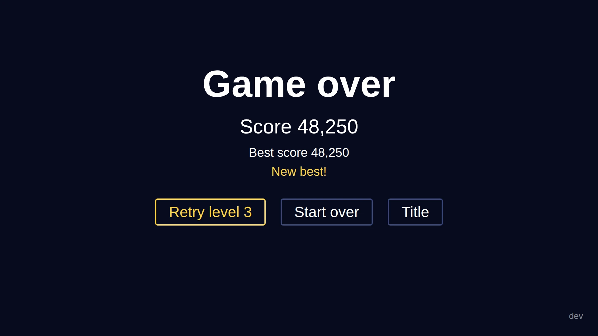
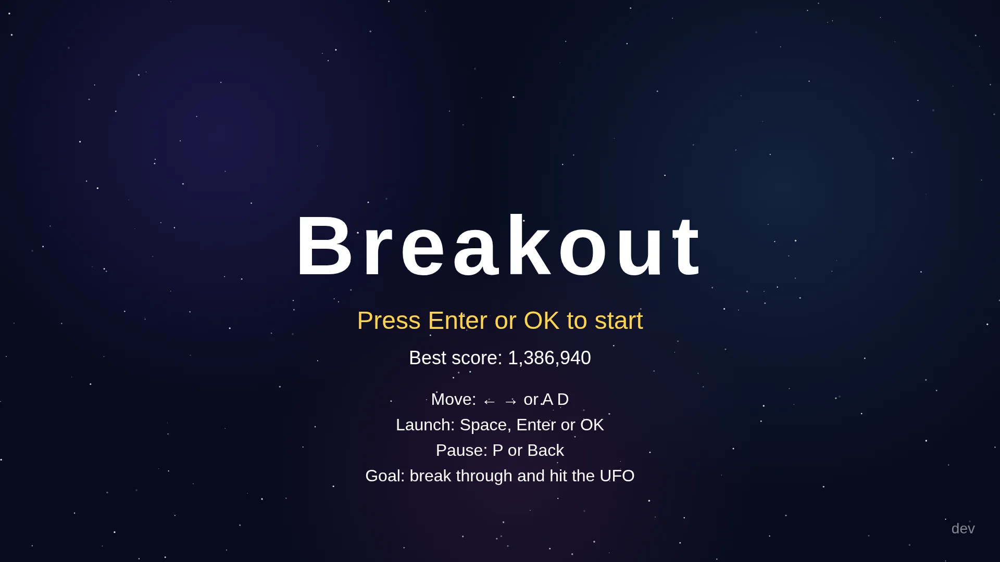

Breakoutبرای تلویزیون سامسونگ
آجرشکن آرکیدی برای تلویزیونهای سامسونگ ۲۰۲۱، روی آسمانی پرستاره. کنترل را بردارید یا کیبورد را وصل کنید، از سه دیوار رد شوید و به بشقابپرندهی پشت هر کدام بزنید، و آخر سر با ایستگاهی جنگی روبهرو شوید که جواب شلیک را با شلیک میدهد.
رایگان و متنباز. آن را در حالت توسعهدهندهی تلویزیون نصب میکنید و با گواهی تایزن خودتان امضا میکنید. نوشتههای داخل بازی انگلیسی است.

چهار دیوار، یک غول آخر
پشت هر دیوار هدفی پنهان است. پشت سه دیوار اول، بشقابپرندهای به چپ و راست میرود و چراغهایش رنگهای رنگینکمان را عوض میکنند. توپ را به آن برسانید تا باقی دیوار محو شود. لازم نیست همهی آجرها را بشکنید.
مرحلهی ۱دیوار کامل
ده ردیف در پنج رنگ. تونلی باز کنید و توپ را از آن بالا بفرستید تا به بشقابپرنده برسد.

مرحلهی ۲دیوار شطرنجی
یکی در میان آجر نیست، پس توپ لابهلای جاهای خالی زیگزاگ میرود و مسیرش را نمیشود حدس زد.

مرحلهی ۳هرم
دو ردیف آجر نقرهای از بالای دیوار محافظت میکنند و هر آجر نقرهای دو ضربه میخواهد.

مرحلهی ۴غول آخرایستگاه جنگی
این بار بشقابپرندهای در کار نیست. ایستگاهی خاکستری پشت دیواری خاکستری ایستاده و به راکت شما شلیک میکند. درست پیش از هر شلیک، بشقابش سبز میدرخشد.
- تیرهای سبز به سمت راکت میآیند. تیری که از کنارتان رد شود هیچ هزینهای ندارد.
- تیر را پس بزنید تا طلایی شود. اگر به ایستگاه برسد، ۱٬۰۰۰ امتیاز میگیرید.
توپ را به خود ایستگاه برسانید تا مرحله را ببرید.
بعد دوباره از اول، تندتر. بعد از مرحلهی ۴ دیوارها از مرحلهی ۱ برمیگردند و هر دور توپ ۱۰ درصد تندتر شروع میکند. با فرسودهشدن دیوار هم کمکم سرعت میگیرد.
امتیاز چطور جمع میشود
آجرها با شکستن امتیاز میدهند. امتیازهای بزرگ پشت دیوار است، و در اینکه توپ را نیندازید.
- ۵۰قرمز
- ۴۰نارنجی
- ۳۰زرد
- ۲۰سبز
- ۱۰آبی
- ۱۰۰نقرهای، دو ضربه
- ۳۰خاکستری روشن
- ۲۰خاکستری تیره
- ۵۰۰
به بشقابپرنده یا ایستگاه بزنید
برخورد توپ به بشقابپرنده در مرحلههای ۱ تا ۳، یا به ایستگاه در مرحلهی ۴، مرحله را تمام میکند: باقی دیوار محو میشود و مرحلهی بعد شروع میشود.
- +۱٬۰۰۰
تیر را پس بزنید
در مرحلهی ۴، تیر سبز را با راکت بگیرید. طلایی برمیگردد، و اگر به ایستگاه برسد ۱٬۰۰۰ امتیاز دارد.
- × جانها
جانهایتان را نگه دارید
هر مرحله ۱۰ جان دارد. وقتی مرحله تمام میشود، کل امتیازتان در تعداد جانهای باقیمانده ضرب میشود.

(۳۱٬۹۰۰ + ۵۰۰) × ۷ = ۲۲۶٬۸۰۰
هفت جان در مرحلهی ۲ مانده. اول ۵۰۰ امتیاز بشقابپرنده اضافه میشود، بعد کل امتیاز در ۷ ضرب میشود و دیوار محو میشود.

جانها تمام شد؟
با Retry level 4 همان مرحله را با امتیازی که به آن رسیده بودید دوباره بازی میکنید. Start over شما را به مرحلهی ۱ میبرد و Title به صفحهی اول. بهترین امتیازتان روی تلویزیون میماند.
کنترلها
هر کیبورد USB یا بلوتوثی را به تلویزیون وصل کنید، یا فقط از کنترل استفاده کنید. کلیدهای یکسان روی هر دو همان کار را میکنند.
کیبورد
- حرکت (نگه دارید)
- ←→ یا AD
- پرتاب توپ
- Space یا Enter
- مکث
- P
- برگشت
- Esc یا Backspace
- صدا روشن/خاموش
- M
- منوها
- ↑↓←→ بعد Enter
کنترل تلویزیون
- حرکت (نگه دارید)
- ←→
- پرتاب توپ
- OK
- مکث، برگشت
- Back
- منوها
- ↑↓←→ بعد OK
نگه دارید تا تند شود
راکت آرام راه میافتد و هرچه کلید را بیشتر نگه دارید تندتر میرود؛ یک ضربهی کوتاه کمی جابهجایش میکند و نگهداشتن طولانی آن را تا آن سر صفحه میبرد. کلید را رها کنید تا بایستد.
دکمهی برگشت همیشه کاری میکند: وسط بازی، بازی را نگه میدارد؛ در منو، آن را میبندد؛ و در صفحهی اول، پیش از خروج میپرسد. هر برخورد یک بوق کوتاه دارد و زدن بشقابپرنده صدای انفجاری چندلایه؛ با M صدا قطع میشود.

نصب روی تلویزیون
Breakout در فروشگاه برنامهی سامسونگ نیست. آن را از کامپیوتری که با تلویزیون در یک شبکه است نصب میکنید، با ابزارهای خط فرمان tizen و sdb از Tizen Studio.
حالت توسعهدهنده را روشن کنید
روی تلویزیون Apps را باز کنید (در بعضی مدلها App Settings)، روی کنترل ۱ ۲ ۳ ۴ ۵ را بزنید و Developer mode را روشن کنید. آیپی کامپیوترتان را وارد کنید و تلویزیون را دوباره راه بیندازید. بعضی مدلها پیش از اولین نصب، Permit to install applications را هم از Device Manager در Tizen Studio میخواهند.
پروفایل امضا بسازید
تلویزیون سامسونگ فقط برنامهی امضاشده نصب میکند و کلید امضا باید پیش صاحبش بماند، پس Breakout را خودتان امضا میکنید. در Certificate Manager از Tizen Studio یک پروفایل گواهی بسازید؛
tizen security-profiles listآن را نشان میدهد. اگر تلویزیون آن را نپذیرفت، از گواهی سامسونگی استفاده کنید که DUID تلویزیونتان در آن ثبت شده باشد.پوشهی برنامه را بگیرید
فایل
breakout-tv-app.zipرا از آخرین انتشار دانلود کنید و از حالت فشرده دربیاورید تا پوشهیappرا داشته باشید. یا آن را از کد بسازید که درdist/appقرار میگیرد:git clone https://github.com/cocodedk/breakout-tv.git cd breakout-tv npm ci npm run stage
بستهبندی، نصب، بازی
اگر فایل دانلودی را باز کردهاید، بهجای
dist/appبنویسیدapp. دستورtizen packageفایل راBreakout.wgtمینامد؛ پیش از نصب نامش را بهapp.wgtتغییر دهید. گزینهی-tنام دستگاهی را میگیرد کهsdb devicesنشان میدهد، نه آیپی را.tizen package -t wgt -s MyProfile -- dist/app sdb connect 192.168.1.50:26101 tizen install -n app.wgt -t MyTV -- dist/app tizen run -p BreakoutTV.Breakout -t MyTV
زیر کاپوت
برنامهی تلویزیون تایزن در اصل یک وبسایت است در یک فایل زیپ، همراه با config.xml. Breakout فقط HTML و CSS و جاوااسکریپت ساده است که در مرورگر خود تلویزیون اجرا میشود و هیچ دسترسیای به اینترنت ندارد.
- مرورگری که هیچوقت بهروز نمیشود
- تلویزیون ۲۰۲۱ روی Chromium 76 میماند. کد از هر چیز جدیدتر مثل
?.و??دوری میکند و یک مرحلهی lint آن را رد میکند. - بدون مرحلهی build
- تگهای script ساده یک فضای نام
window.BOرا با هم شریکاند: نه ماژول، نه bundler، نه فریمورک. آسمان، بشقابپرنده و ایستگاه را خود بازی میکشد، نه اینکه از تصویر بارگذاری شوند. - یک کنترلکننده، دو ورودی
- کیبورد و کنترل هر دو رویداد کلید میفرستند و بازی
keyCodeرا میخواند که تلویزیون برای هر دو درست پر میکند. - تست بدون تلویزیون
- دستور
npm run checkاینها را اجرا میکند: lint سازگاری، تستهای واحد فیزیک، ایستگاه و امتیاز، و درایوهای Playwright که هر چهار مرحله را با کلیدهای ساختگی در ۱۹۲۰×۱۰۸۰ بازی میکنند.
Breakout را بگیرید
آخرین نسخه و کد کامل در گیتهاب است. روی مدل تلویزیونتان مشکلی دیدید؟ یک issue باز کنید.
ساختهی Cocode.